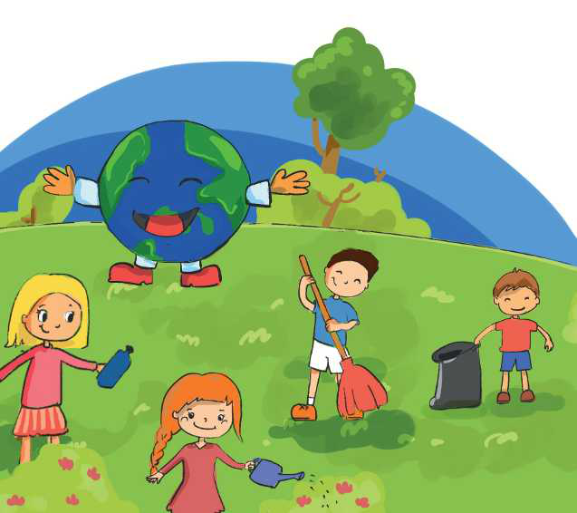

TEMATIKA 5: MJEDISI DHE SHËNDETI
3.GËZUAR DITËN TËNDE, TOKË!

Në klasën e Ditës dhe të Diellit mësuesja u foli fëmijëve për Ditën e Tokës.
“Ashtu siç ne kemi ditëlindjen në një datë të caktuar, edhe Toka ka ditën e saj. Kjo ditë është më 22 Prill. Atë ditë ne nuk i blejmë Tokës tortë, por dalim të gjithë së bashku në natyrë dhe e pastrojmë atë! Ju duhet ta dini se Toka kënaqet shumë nga kjo gjë. Në mënyrën e vet, ajo na falënderon dhe na porosit që të kujdesemi vazhdimisht për të.